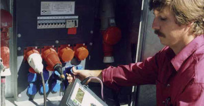
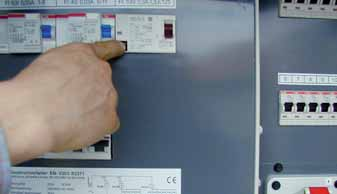
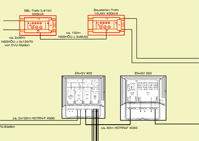
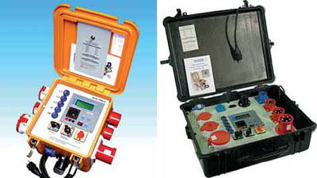
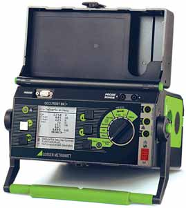

Die Instandsetzung und Wartung von elektrischen Anlagen und Betriebsmitteln darf nur von Elektrofachkräften vorgenommen werden. Elektrische Betriebsmittel, von denen infolge eines Mangels eine Gefährdung ausgeht, müssen sofort wirksam der Benutzung entzogen werden.
auf Tunnelbaustellen müssen regelmäßig auf ordnungsgemäßen Zustand durch eine Elektrofachkraft geprüft werden. Für die Prüffristen gilt ein Richtwert von einem Jahr.
sind mindestens einmal im Monat auf Wirksamkeit durch eine Elektrofachkraft oder – wenn geeignete Prüfgeräte zur Verfügung stehen – durch eine elektrotechnisch unterwiesene Person unter Leitung und Aufsicht einer Elektrofachkraft zu prüfen.

Zusätzlich zu Abschnitt 6.2.2 muss arbeitstäglich eine Prüfung auf einwandfreie Funktion durch Betätigen der Prüfeinrichtung durchgeführt werden.

Für Isolationsüberwachungseinrichtungen gelten die Vorgaben und Prüffristen nach den Abschnitten 6.2.1 bis 6.2.3.
auf Tunnelbaustellen müssen regelmäßig auf ordnungsgemäßen Zustand von einer Elektrofachkraft oder bei Verwendung geeigneter Prüfgeräte von einer elektrotechnisch unterwiesenen Person unter Leitung und Aufsicht einer Elektrofachkraft geprüft werden.
Für die Prüffristen gilt ein Richtwert von drei Monaten.
Die Angabe der Prüffrist als Richtwert ist notwendig, da auf Tunnelbaustellen die Beanspruchung der Betriebsmittel sehr verschieden sein kann.
Die Festlegung der Prüffristen gehört zur Unternehmerverantwortung. Je nach Beanspruchung der Betriebsmittel sind variable Prüffristen möglich. Bei hoher Beanspruchung sind die Fristen zu verkürzen. Bei niedriger Beanspruchung dürfen die Fristen über den Richtwert hinaus bis zu einem Jahr verlängert werden.
Als Kriterium zur Festlegung der Prüffristen gilt Tabelle 1 B, Durchführungsanweisung zur BGV A3. Als Orientierungshilfe dient die bei der Prüfung auftretende Fehlerquote. Liegt diese unter 2%, darf die Prüffrist verlängert werden. Die Fehlerquote ermittelt sich aus dem Anteil der Betriebsmittel mit Mängeln an der Gesamtzahl der geprüften Betriebsmittel.
Unternehmer, die diese Regelung nicht in Anspruch nehmen wollen, erfüllen die Schutzzielvorgaben der BGV A3, wenn die in der nachfolgenden Tabelle 2 aufgeführten Prüffristen eingehalten werden.
Tabelle 2 – Betriebsspezifische Prüffristen
| Betriebs-Bedingungen | Beispiele | Frist |
| Hohe Beanspruchungen | Schleifen von Metallen (Aluminium, Magnesium und gefettete Bleche), Verwendung in Bereichen mit leitfähigen Stäuben | Wöchentlich |
| Nassschleifen von nichtleitenden Materialien, Kernbohren, Stahlbau, Tunnel- und Stollenbau | 3 Monate | |
| Normale Beanspruchungen | Hochbau, allgemeiner Tiefbau Elektroinstallation, Sanitär- und Heizungsinstallation, Holzausbau |
6 Monate |
Ortsveränderliche elektrische Betriebsmittel auf Tunnelbaustellen muss der Benutzer vor jedem Einsatz auf äußerlich erkennbare Schäden und Mängel prüfen.
Der Prüfnachweis gilt als erbracht, wenn die geprüften und als mängelfrei beurteilten Betriebsmittel gekennzeichnet sind.
Als Kennzeichnung genügt eine Prüfplakette oder eine Banderole.
Es wird empfohlen, die Prüfungen nach den Abschnitten 6.2.1, 6.2.2, 6.2.4 und 6.2.5 zu dokumentieren.
Die aktuellen für den sicheren Betrieb erforderlichen Unterlagen mit Übersichts- und Detailschaltplänen der elektrischen Anlage müssen auf der Baustelle vorliegen und zugänglich sein.


Mobile Leitungsprüfgeräte

Prüfgerät – Prüfung von elektrischen Betriebsmitteln nach VDE 0701 und 0702